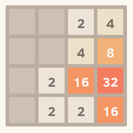

Programação Funcional e Lógica - Prof. Ricardo da Rocha
</p>
<h1>Tarefa 4 de Programação Funcional e Lógica</h1>
<h1>Visão geral</h1>
<p>Nesta tarefa você deverá implementar em Haskell o jogo <strong>2048</strong>. O objetivo desta atividade é fazer com que o aluno explore o uso de <strong>tipos definidos pelo usuário</strong> e de <strong>entrada/saída</strong> em Haskell. Esta tarefa tem complexidade pequena.</p>
<h1>Descrição</h1>
<h3>Atividade 1: Algoritmo do Jogo 2048</h3>
<p>Implemente o algoritmo de processamento de movimento do jogo <a href="https://gabrielecirulli.github.io/2048/">2048</a>, para o qual dados (1) uma representação de estado do tabuleiro e (2) um movimento do jogador entre os quatro possíveis ("Cima", Baixo", "Esquerda" ou "Direita"), o seu programa Haskell deverá gerar o novo estado do tabuleiro.</p>
<p>O tabuleiro deve ser um tipo chamado de <code>Tabuleiro</code> com a seguinte representação: uma matriz 4x4 de <code>Posicao</code> (em Haskell representada como <code>[[Posicao]]</code>).</p>
<pre><code> data Posicao = Vazia | Ocupada Int
</code></pre>
<p>Uma <code>Posicao</code> pode ser <code>Vazia</code> quando não há nenhum número lá colocado ou <code>Ocupada</code> com o respectivo valor.
Os possíveis movimentos devem ser declarados como tipos enumerados e o nome do seu tipo deve ser <code>Movimento</code>.</p>
<p>A sua implementação deve, além das declarações dos tipos indicados, prover uma função <code>joga</code>, que recebe um tabuleiro 2048 e um movimento (nesta ordem) e retorna o estado resultante do tabuleiro.</p>
<p>Implementar uma função (trivial) <code>criaTabuleiro</code> que cria um tabuleiro vazio (com <code>Vazia</code> em todas as posições).</p>
<p>Implementar uma função <code>exibeTabuleiro</code> que mostra o estado de um tabuleiro na saída padrão (texto), como no seguinte exemplo:</p>
<pre><code> ____ ____ 2 4
____ ____ 4 8
____ 2 16 32
____ 2 2 16
</code></pre>
<p>Essa saída representa o estado abaixo do tabuleiro. Para ajudar a exibir o texto corretamente, é importante usar a biblioteca <code>Text.Printf</code> (veja <a href="#printf">abaixo</a>). </p>
<p></p>
<p>Nesta condição, considerando que <code>tabuleiro</code> descreve o estado desse tabuleiro, ao invocar a função</p>
<pre><code> joga tabuleiro Cima
</code></pre>
<p>o resultado é um tabuleiro com a seguinte configuração mostrada pela função <code>exibeTabuleiro</code>:</p>
<pre><code> ____ 4 2 4
____ ____ 4 8
____ ____ 16 32
____ ____ 2 16
</code></pre>
<p>Você ainda deverá implementar duas funções que manipulam um tabuleiro:</p>
<ul>
<li><code>posicoesVazias</code>: que retorna as posições vazias de um tabuleiro, ou seja, aquelas que não estão preenchidas com números. Se o resultado é uma lista vazia, então significa que o jogo terminou.</li>
<li><code>insereEmPosicao</code>: que insere um número 2 (sempre!) em uma posição do tabuleiro. A posição deve estar vazia.</li>
</ul>
<p>As posições do tabuleiro devem ser identificadas por números inteiros sequenciais se acordo com o seguinte diagrama:</p>
<pre><code> 0 1 2 3
4 5 6 7
8 9 10 11
12 13 14 15
</code></pre>
<p>Assim, as funções mencionadas devem obedecer as seguintes declarações de tipo:</p>
<pre><code> posicoesVazias :: Tabuleiro -&gt; [Int]
insereEmPosicao :: Tabuleiro -&gt; Int -&gt; Tabuleiro
</code></pre>
<p>Para entender como o jogo funciona e realizar experimentos, sugiro as seguintes fontes:</p>
<ul>
<li><a href="https://gabrielecirulli.github.io/2048/">Jogo original 2048</a> de Gabriele Cirulli</li>
<li>Curta descrição na wikipedia em <a href="https://pt.wikipedia.org/wiki/2048_(jogo_eletr%C3%B4nico">português</a>) ou <a href="https://en.wikipedia.org/wiki/2048_(video_game">inglês</a>).</li>
</ul>
<h3>Atividade 2: Interface com o usuário do jogo 2048</h3>
<p>Nesta segunda atividade, você deve implementar a interface com usuário do jogo, que <strong>deve ser textual</strong>, utilizando as função <code>exibeTabuleiro</code>. A sua implementação deve obedecer aproximadamente o seguinte pseudo-código:</p>
<pre><code> criaTabuleiro
laço de repetição
sortearPosicao - escolher uma posição aleatória vazia para colocar um 2
insereEmPosicao (sorteada anteriormente)
exibeTabuleiro
leMovimento (usuário indica o movimento desejado)
joga tabuleiro
</code></pre>
<p>Para <code>sortearPosicao</code>, você precisará usar um gerador de números aleatórios. Veja a seção <a href="#random">Geração de números aleatórios</a></p>
<p>Para os movimento do tabuleiro, eu sugiro utilizar uma combinação de caracteres para os movimentos "Cima", Baixo", "Esquerda" e "Direita", como a combinação <a href="https://en.wikipedia.org/wiki/Arrow_keys#WASD_keys">WASD</a> ou <a href="https://en.wikipedia.org/wiki/Arrow_keys#HJKL_keys">HJKL</a>. Peço apenas que indique na saída do jogo qual combinação deve ser usada.</p>
<p>O único objetivo dessa parte da implementação que fazer vocês se acostumarem com entrada-saída elementar em Haskell. A implementação é muito simples, e vocês não devem gastar mais do que 15 linhas.</p>
<h3>Recomendações importantes</h3>
<ul>
<li>Jamais iniciem a segunda parte ("Atividade 2"), sem finalizar a primeira.</li>
<li>A interface do programa deve ser textual. Não desperdicem o tempo tentando fazer algo diferente.</li>
</ul>
<h1>Requisitos</h1>
<p>A sua solução deve ser implementada em um projeto <strong>Stack</strong> e deve possuir testes de unidade especificados em <a href="https://hspec.github.io/">HSpec</a>. Informação sobre o uso do Stack e HSpec:</p>
<ul>
<li><a href="../softwares.html">Instalação e uso do Stack e Testes de Unidade</a></li>
</ul>
<p>Reveja o <a href="http://inf.ufg.br/~ricardo/pfl/plano/plano-PFL-2019.2.pdf">plano da disciplina</a> na seção "PROCESSOS E CRITÉRIOS DE AVALIAÇÃO", caso seja necessário relembrar como as tarefas serão avaliadas.</p>
<p>Os seguintes requisitos devem ser satisfeitos para o seu código ter o conceito <strong>FINALIZADO</strong>.</p>
<ol>
<li>Todas as funções indicadas devem ser implementadas.</li>
<li>Todas as funções implementadas devem incluir código de teste HSpec, para além das funções indicadas acima.</li>
<li>A sua implementação deve estar em um projeto Stack.</li>
<li>O seu código deverá ser submetido pelo <a href="https://classroom.github.com/">GitHub Classroom</a>, no local indicado pelo email com o assunto: <strong><code>[PFL] submissão da tarefa 04 - Algoritmica do Jogo 2048</code></strong>. </li>
<li>As tarefas são individuais e nenhum tipo de cópia ou similaridade com código, seja de outro aluno, seja da Internet ou livros, será aceita.</li>
</ol>
<h1>Prazo</h1>
<p>O prazo para entrega da atividade é o dia <strong>19 de outubro</strong> (sábado). Depois desse prazo, você poderá efetuar correções na sua implementação - quando solicitadas pelo professor - em até 10 dias adicionais. Excepcionalmente estão dando um prazo maior, a pedido de alunos, para correções que não está relacionado com a complexidade do problema (que é menor que a da tarefa anterior).</p>
<h2>Auxilio nos códigos</h2>
<h3><a id="printf">Text.Printf</a></h3>
<p>A biblioteca <code>Text.Printf</code> do Haskell é bastante útil para formatar um texto como desejado como se faz com o <code>printf</code> de C. O código abaixo, recebe um inteiro <code>i</code> e gera uma string com <code>i</code> garantindo que ele sempre ocupará 4 espaços (formatado como <code>"% 4d"</code>). Veja abaixo uma saída do GHCi com cinco invocações do <code>printf</code>.</p>
<pre><code> *Main&gt; import Text.Printf
*Main Text.Printf&gt; printf "Pontuacao no jogo foi de % 4d pontos!\n" 2
Pontuacao no jogo foi de 2 pontos!
*Main Text.Printf&gt; printf "Pontuacao no jogo foi de % 4d pontos!\n" 64
Pontuacao no jogo foi de 64 pontos!
*Main Text.Printf&gt; printf "Pontuacao no jogo foi de % 4d pontos!\n" 1024
Pontuacao no jogo foi de 1024 pontos!
*Main Text.Printf&gt; printf "Pontuacao no jogo foi de % 4d pontos!\n" 2048
Pontuacao no jogo foi de 2048 pontos!
*Main Text.Printf&gt; printf "Pontuacao no jogo foi de % 4d pontos!\n" 1000
Pontuacao no jogo foi de 1000 pontos!
</code></pre>
<h3><a id="random">Geração de números aleatórios</a></h3>
<p>Para gerar números aleatórios, você deverá usar um gerador de números pseudo-aleatórios que está disponível no Haskell no pacote <a href="http://hackage.haskell.org/package/random-1.1/docs/System-Random.html">System.Random</a>. Antes de mais nada, o seu código precisará ter o seguinte import:</p>
<pre><code> import System.Random
</code></pre>
<p>Você pode precisar instalar o pacote na sua instalação Haskell, o que você faz pelo <strong>stack</strong> com o seguinte comando:</p>
<pre><code> stack install random
</code></pre>
<p>Da mesma maneira, você precisa acrescentar a dependência desse pacote no arquivo <code>package.yaml</code> do seu projeto stack. Já adianto que eu não consegui fazer o <a href="https://repl.it/languages/haskell">repl.it</a> instalar/usar esse pacote. </p>
<p>Antes de mais nada, você precisa gerar uma "semente" para o seu gerador - o que existe em qualquer biblioteca de números aleatórios, em qualquer linguagem. Isso é feito passando um número inteiro (a semente) à função <code>mkStdGen</code>. Dado um mesmo inteiro, o gerador gerará <strong>sempre</strong> a mesma sequência de aleatórios.</p>
<p>O pacote <code>System.Random</code> é bastante genérico e pode gerar números aleatórios de diversas maneiras (booleanos aleatórios, floats aleatórios, inteiros aleatórios, ...). Vou considerar que a gente precisa criar um inteiro de 0 até determinado valor.</p>
<p>Para mais informações, sugiro uma leitura à <a href="http://haskell.tailorfontela.com.br/input-and-output#randomness">seção Aleatoriedade</a>, do livro-tutorial que estamos usando. Você pode, por exemplo, preferir usar uma função - lá descrita - que retorna uma ilsta infinita de inteiros aleatórios.</p>
<p>Usarei como semente o valor <code>3412342399</code> e a função geradora <code>random</code>. Eu preciso especificar o tipo que a função precisa retornar - na forma de uma declaração - que deve ser um par <code>(&lt;tipo&gt;, StdGen)</code>. No caso, escolhi como <code>&lt;tipo&gt;</code> o tipo <code>Int</code>, fazendo com que meu gerar gerasse como resultado um inteiro e outro gerador de número (para o próximo aleatório). No GHCi tenho como resposta:</p>
<pre><code> Prelude System.Random&gt; random (mkStdGen 3412342399) :: (Int, StdGen)
(2505012912749827911,384115113 2103410263)
</code></pre>
<p>Onde <code>(2505012912749827911,384115113 2103410263)</code> é o par mencionado. Eu uso a resposta <code>2505012912749827911</code> como o número aleatório que eu desejo. Por exemplo, se eu quero um número aleatório de 0 a 100, basta calcular <code>2505012912749827911 mod 100</code>.</p>
<pre><code> Prelude System.Random&gt; (numero, gerador) = random (mkStdGen 3412342399) :: (Int, StdGen)
Prelude System.Random&gt; numero
2505012912749827911
Prelude System.Random&gt; gerador
384115113 2103410263
Prelude System.Random&gt; numero `mod` 20
11
Prelude System.Random&gt; (numero2, gerador2) = random gerador :: (Int, StdGen)
Prelude System.Random&gt; random gerador :: (Int, StdGen)
(4798534832313400113,521533783 1780294415)
Prelude System.Random&gt; (numero2, gerador2) = random gerador :: (Int, StdGen)
Prelude System.Random&gt; numero2
4798534832313400113
Prelude System.Random&gt; gerador2
521533783 1780294415
Prelude System.Random&gt; numero2 `mod` 20
13
</code></pre>
<p>